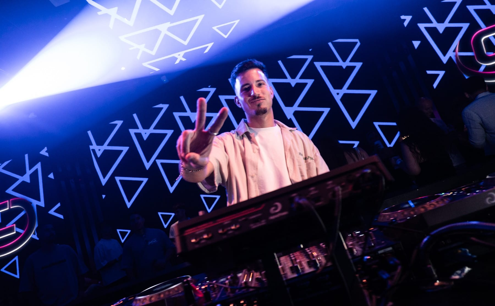
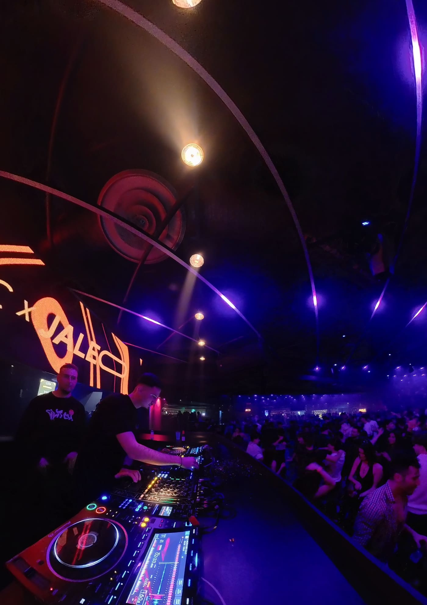

Press kit · 2026DJ urbano · Maresme, Barcelona
Reggaetón Urbano Comercial Afro House Pachanga
Reggaetón Urbano Comercial Afro House Pachanga
01 · Bio
DJ urbano del Maresme con una propuesta fresca, versátil y enfocada a la pista. Sus sesiones combinan reggaetón, música urbana, hits comerciales, afro, house y pachanga, creando un sonido actual y enérgico.

02 · Experiencia
Eventos
El Jaleo✦Attic✦Hotel W✦Zeta Dance Club

Classic · Mataró

Rider técnico
Si la sala tiene otro equipo, lo hablamos antes del bolo.